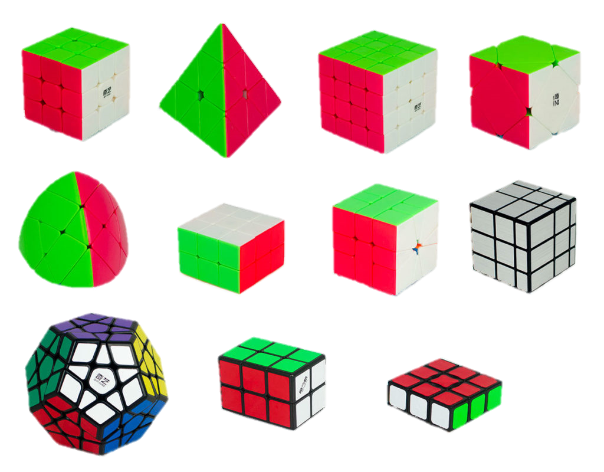

Esta pagina web a sido creada por los alumnos Diego Valencia Vallejo y Nathaly Paulina Ruíz Méndez cursantes de la carrera de Técnico en programación del Colegio de Estudios Cientificos Y Tecnológicos del Estado de Oaxaca pl 29 Xoxocotlán en conjunto con el profesor en cargado de la materia M.I.E Jose Luis Estrada Martinez.
Esta página web, está dirigida a todo público que esté buscando un pasatiempo que tenga variedad, a usuarios con problemas de concentración y/o estrés, ya que metaboliza la concentración, memoria y la previsualización.
OJBJETIVO GENERAL DE LA PÁGINA WEB
El objetivo principal de esta página web es mostrar a la audiencia la trascendencia de los cubos de Rubik comenzando por su historia y continuando con diferentes datos como algunas curiosidades de este mismo, tales como las modificaciones que ha sufrido a lo largo de los años y la gran variedad de cubos de Rubik que exciten en todo el mundo.
OBJETIVOS ESPECÍFICOS
-Dar una pequeña muestra de lo que es el cubo de Rubik a la audiencia interesada en conocerle.
-Mostrar algunos datos históricos de este mismo, para dar a conocer datos sobre du origen.
-Dar a conocer algunos de los beneficios que este tiene a medida de su resolución atreves de algoritmos.
-Dar a conocer las modificaciones que ha sufrido el cubo, y mostrar cómo se pueden encontrar (nombre).
